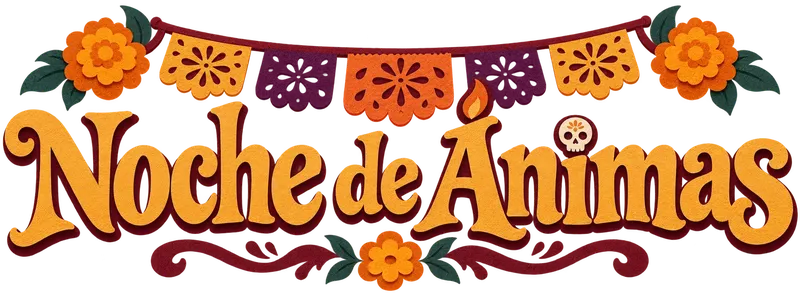

Demo 3D v1.2 · terror analógico y núcleo v2: las pruebas se provocan y el ánima tiene hambre. Estilo de aristas duras.
Hasta 4 investigadores; el ánima es un bot. Quien crea la sala es el anfitrión: su navegador corre la partida, así que debe quedarse hasta el final. Usa audífonos. Tu personaje es el que elijas abajo, en «Nueva noche».
Los cinco investigadores y los ocho testigos de la casona (roles de las cartas), con modelo 3D y animaciones. Por ahora los roles se juegan como personajes; sus habilidades de las cartas aún no están en el videojuego.
En celular: joystick abajo a la izquierda, botones abajo a la derecha y arrastra en la pantalla para mirar. Prototipo: modelos hechos en código, sin arte final. En línea: hasta 4 personas con voz por cercanía (mantén V para hablar por radio). Los lugares vacíos los ocupan bots.
Todas parten del Ánima en pena y cambian su perfil: cómo ven, oyen, se mueven, cazan y qué fenómenos usan.
Noches por ánima Investigadores